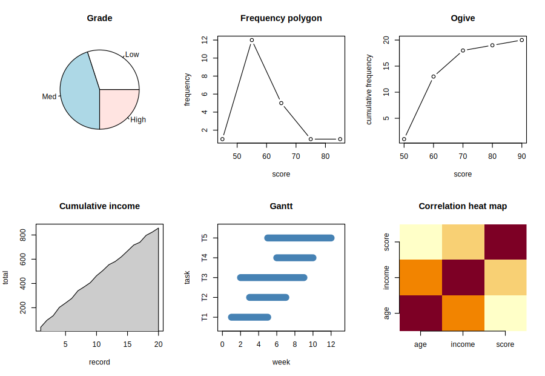

var, the continuity correction in wilcox.test — it is named.
One data set carries the whole course, so that each stage can be checked against the last.
grade is derived from score and buy is the outcome the
classification analysis predicts. Every programme below begins with these lines.
customers <- data.frame(
id = 1:20,
age = c(23,45,31,58,27,39,52,34,29,48,36,41,25,55,33,44,30,50,28,38),
income = c(40,57,37,69,36,38,63,32,35,57,42,49,26,39,48,49,23,57,27,33),
score = c(54,55,64,77,69,60,85,57,65,59,64,60,51,57,60,60,55,67,40,56),
gender = factor(c("M","F","M","F","M","F","M","F","M","F",
"M","F","M","F","M","F","M","F","M","F")),
buy = c(0,1,0,1,1,0,1,0,0,1,0,0,0,0,1,1,0,1,0,0)
)
customers$grade <- cut(customers$score, breaks = c(-Inf, 57, 65, Inf),
labels = c("Low","Med","High"), right = FALSE)
customers$buy <- factor(customers$buy, levels = c(0,1), labels = c("No","Yes"))Note right = FALSE. R's cut closes intervals on
the right by default, so breaks = c(-Inf, 57, 65, Inf) without it would put a
score of exactly 57 in the Low class. Boundary cases are where derived categorical
variables go wrong, and they go wrong silently.
For the customers data, place each variable on its scale of measurement, declare the ordinal
variable so that R refuses the wrong operations, and carry out the pre-processing checks for missing values and
duplicates.
To identify the scale of each variable, which decides the operations that mean anything, and to check the data before any analysis.
R's class is not the scale. "numeric" covers age (ratio) and score (interval);
"factor" covers gender (nominal) and grade (ordinal).
| Scale | Distinguishes | Legitimate summaries | Here |
|---|---|---|---|
| Nominal | difference only | counts, mode, \(\chi^{2}\) | gender, buy |
| Ordinal | difference and order | median, quartiles, rank correlation, rank tests | grade |
| Interval | order and equal spacing, arbitrary zero | mean, standard deviation, correlation — but not ratios | score, treated as interval |
| Ratio | all of the above, plus a true zero | everything, including the coefficient of variation and the geometric mean | age, income |
Coding grade 1, 2, 3 and taking a mean produces a number, and the number is meaningless: nothing
says the step from Low to Med equals the step from Med to High. Declared ordered, the median is found by
quantile() and the mean is refused.
The checks come in a fixed order: read and inspect; fix types; count missing values and decide (drop, impute, and by what); identify outliers without deleting them; check duplicates on the key; only then derive and transform; and split before anything is estimated if a model is to be fitted.
| Command or formula | What it does |
|---|---|
str(), sapply(d, class) | the structure and R's storage class of each column |
factor(x, levels, ordered = TRUE) | an ordinal variable: order is kept, arithmetic is refused |
colSums(is.na(d)), duplicated(key) | missing values per column; repeated keys |
# Practical 1: Understanding the Data Set
# The data set: twenty records
customers <- data.frame(
id = 1:20,
age = c(23,45,31,58,27,39,52,34,29,48,36,41,25,55,33,44,30,50,28,38),
income = c(40,57,37,69,36,38,63,32,35,57,42,49,26,39,48,49,23,57,27,33),
score = c(54,55,64,77,69,60,85,57,65,59,64,60,51,57,60,60,55,67,40,56),
gender = factor(c("M","F","M","F","M","F","M","F","M","F",
"M","F","M","F","M","F","M","F","M","F")),
buy = c(0,1,0,1,1,0,1,0,0,1,0,0,0,0,1,1,0,1,0,0)
)
customers$grade <- cut(customers$score, breaks = c(-Inf, 57, 65, Inf),
labels = c("Low","Med","High"), right = FALSE)
customers$buy <- factor(customers$buy, levels = c(0,1), labels = c("No","Yes"))
# Step 1: Inspect the structure, and the counts of each category
str(customers)
sapply(customers, class)
table(customers$grade); table(customers$gender); table(customers$buy)
# Step 2: Declare grade ordinal, and see what R then allows
customers$grade <- factor(customers$grade, levels = c("Low","Med","High"), ordered = TRUE)
quantile(customers$grade, 0.5, type = 1) # the median of an ordered factor
mean(customers$grade)
# Step 3: Pre-processing checks: missing values and duplicates
colSums(is.na(customers))
sum(duplicated(customers$id))
sapply(customers, function(v) sum(is.na(v))) # works for any data frame'data.frame': 20 obs. of 7 variables:
$ id : int 1 2 3 4 5 6 7 8 9 10 ...
$ age : num 23 45 31 58 27 39 52 34 29 48 ...
$ income: num 40 57 37 69 36 38 63 32 35 57 ...
$ score : num 54 55 64 77 69 60 85 57 65 59 ...
$ gender: Factor w/ 2 levels "F","M": 2 1 2 1 2 1 2 1 2 1 ...
$ buy : Factor w/ 2 levels "No","Yes": 1 2 1 2 2 1 2 1 1 2 ...
$ grade : Factor w/ 3 levels "Low","Med","High": 1 1 2 3 3 2 3 2 3 2 ...
id age income score gender buy grade
"integer" "numeric" "numeric" "numeric" "factor" "factor" "factor"
Low Med High
6 9 5
F M
10 10
No Yes
12 8 50%
Med
Levels: Low < Med < High
[1] NA
Warning message:
In mean.default(customers$grade) :
argument is not numeric or logical: returning NA id age income score gender buy grade
0 0 0 0 0 0 0
[1] 0
id age income score gender buy grade
0 0 0 0 0 0 0 mean() of a factor is not an error in R: it returns NA and warns that the argument is not numeric or logical. The warning is the refusal; a script that ignores warnings will carry the NA on.
median() refuses a factor, even an ordered one, with the error "need numeric data". The median of an ordered factor is quantile(x, 0.5, type = 1) (types 1 and 3 are the quantile rules that pick an observed value rather than interpolate between two).
The twenty records hold two ratio variables (age, income), one interval
(score), one ordinal (grade: Low 6, Med 9, High 5) and two nominal (gender: 10 and
10; buy: No 12, Yes 8). There are no missing values and no duplicate keys. Declared ordered, grade
has median Med, and R refuses its mean — it returns NA with a warning — which is the
right answer to a meaningless question.
Apply standardization, min–max normalization, and the log, square-root and square transformations to
income, judging each by what it does to the skewness; and encode a cyclic variable (month) by its sine
and cosine.
To choose a transformation by what it does to the data, and to see why a cyclic variable needs two columns.
Judge a transformation by what it does to the skewness, not by habit.
z uses R's sd, which divides by \(n-1\); scale() does the same and returns a matrix, not a vector.
Month 1 and month 12 are one month apart, but as numbers eleven. Mapped onto a circle, with both coordinates — \(\sin\) alone cannot separate month 3 from month 9 — the distances come right.
| Command or formula | What it does |
|---|---|
| Standardization | \((x-\bar x)/s\): mean 0, sd 1; for variables on different units in one model or distance |
| Normalization | \((x-\min)/(\max-\min)\): range \([0,1]\); for a bounded input |
| Log, square root | \(\ln x\) (\(x > 0\)), \(\sqrt x\) (\(x \ge 0\)): reduce right skew, the root more mildly |
| Square | \(x^{2}\): reduces left skew |
| Sine and cosine | \(\sin(2\pi x/p)\), \(\cos(2\pi x/p)\): a cyclic variable of period \(p\), as a pair |
| Skewness | \(m_3/m_2^{3/2}\), the moment definition |
# Practical 2: Data Transformations
# The data set: twenty records
customers <- data.frame(
id = 1:20,
age = c(23,45,31,58,27,39,52,34,29,48,36,41,25,55,33,44,30,50,28,38),
income = c(40,57,37,69,36,38,63,32,35,57,42,49,26,39,48,49,23,57,27,33),
score = c(54,55,64,77,69,60,85,57,65,59,64,60,51,57,60,60,55,67,40,56),
gender = factor(c("M","F","M","F","M","F","M","F","M","F",
"M","F","M","F","M","F","M","F","M","F")),
buy = c(0,1,0,1,1,0,1,0,0,1,0,0,0,0,1,1,0,1,0,0)
)
customers$grade <- cut(customers$score, breaks = c(-Inf, 57, 65, Inf),
labels = c("Low","Med","High"), right = FALSE)
customers$buy <- factor(customers$buy, levels = c(0,1), labels = c("No","Yes"))
# Step 1: Skewness of income under each transformation
skewness <- function(x) { # no package: the moment definition
m <- mean(x); n <- length(x)
(sum((x - m)^3)/n) / (sum((x - m)^2)/n)^1.5
}
round(c(raw = skewness(customers$income), log = skewness(log(customers$income)),
sqrt = skewness(sqrt(customers$income)), square = skewness(customers$income^2)), 6)
# Step 2: Standardization and normalization, written out and checked
z <- (customers$income - mean(customers$income)) / sd(customers$income)
mm <- (customers$income - min(customers$income)) /
(max(customers$income) - min(customers$income))
round(c(mean = mean(z), sd = sd(z), min = min(mm), max = max(mm)), 6)
round(c(z[2], mm[2], z[13], mm[13]), 6)
isTRUE(all.equal(as.vector(scale(customers$income)), z))
# Step 3: A cyclic variable: distances between months
cyc <- function(m, period = 12) cbind(s = sin(2*pi*m/period), c = cos(2*pi*m/period))
d <- function(a, b) sqrt(sum((cyc(a) - cyc(b))^2))
round(c("1 to 12" = d(1, 12), "1 to 2" = d(1, 2), "1 to 6" = d(1, 6)), 6) raw log sqrt square
0.387399 -0.107543 0.147594 0.822684 mean sd min max
0 1 0 1
[1] 1.103064 0.739130 -1.313542 0.065217
[1] TRUE 1 to 12 1 to 2 1 to 6
0.517638 0.517638 1.931852 income is only mildly right-skewed (0.387). The square root leaves 0.148 and is the best here; the
log over-corrects to −0.108, and squaring makes it worse (0.823). Reach for the mildest transformation that
does the job, because every transformation costs interpretability. Standardized income has mean 0 and sd 1;
normalized income runs from 0 to 1. On the circle, month 1 is as close to month 12 as to month 2 (0.518), and month 6
is the farthest (1.932).
Summarise each variable of customers with the measures its scale permits.
To choose each summary by the variable's scale of measurement, not by whether R will compute it.
Nine quantile definitions exist; R's default, type 7, is not the one most textbooks use. State it, or the numbers cannot be reproduced.
| Command or formula | What it does |
|---|---|
summary(), sd(), IQR() | location and spread of the interval and ratio variables |
quantile(x) | quartiles, by R's type 7 rule: interpolating at \(h = (n-1)p\) |
table() | the only summary a nominal scale allows |
quantile(g, p, type = 1) of an ordered factor | the median and quartiles, the summaries an ordinal scale allows |
# Practical 3: Descriptive Statistics by Scale
# The data set: twenty records
customers <- data.frame(
id = 1:20,
age = c(23,45,31,58,27,39,52,34,29,48,36,41,25,55,33,44,30,50,28,38),
income = c(40,57,37,69,36,38,63,32,35,57,42,49,26,39,48,49,23,57,27,33),
score = c(54,55,64,77,69,60,85,57,65,59,64,60,51,57,60,60,55,67,40,56),
gender = factor(c("M","F","M","F","M","F","M","F","M","F",
"M","F","M","F","M","F","M","F","M","F")),
buy = c(0,1,0,1,1,0,1,0,0,1,0,0,0,0,1,1,0,1,0,0)
)
customers$grade <- cut(customers$score, breaks = c(-Inf, 57, 65, Inf),
labels = c("Low","Med","High"), right = FALSE)
customers$buy <- factor(customers$buy, levels = c(0,1), labels = c("No","Yes"))
# Step 1: The interval and ratio variables
summary(customers[c("age","income","score")])
round(sapply(customers[c("age","income","score")], sd), 4)
skewness <- function(x) { m <- mean(x); (mean((x - m)^3)) / (mean((x - m)^2))^1.5 }
round(sapply(customers[c("age","income","score")], skewness), 4)
# Step 2: Quartiles, and R's convention
quantile(customers$income)
IQR(customers$age)
# Step 3: The ordinal and nominal variables
customers$grade <- factor(customers$grade, ordered = TRUE)
quantile(customers$grade, c(0.25, 0.5, 0.75), type = 1)
table(customers$gender) age income score
Min. :23.00 Min. :23.00 Min. :40.00
1st Qu.:29.75 1st Qu.:34.50 1st Qu.:55.75
Median :37.00 Median :39.50 Median :60.00
Mean :38.30 Mean :42.85 Mean :60.75
3rd Qu.:45.75 3rd Qu.:51.00 3rd Qu.:64.25
Max. :58.00 Max. :69.00 Max. :85.00
age income score
10.4534 12.8279 9.4361
age income score
0.3507 0.3874 0.5613 0% 25% 50% 75% 100%
23.0 34.5 39.5 51.0 69.0
[1] 1625% 50% 75%
Low Med Med
Levels: Low < Med < High
F M
10 10 Age has mean 38.30 and median 37.0 (sd 10.45); income 42.85 and 39.5 (sd 12.83); score 60.75 and 60.0 (sd 9.44).
All three are mildly right-skewed — mean above median in every case — which is what a mean and a median printed
side by side are for. grade has median Med; gender is summarised only by its counts,
10 and 10. The quartiles of grade are Low and Med.
Draw, from the customers data, the diagrams of the prescribed list that the standard four do not
cover — pie chart, frequency polygon, ogive, area chart, Gantt chart and heat map — and give the correlation
matrix the heat map shows.
To draw each prescribed diagram for the kind of data it suits, and to report the numbers a picture only points to.
A heat map shows where to look; the matrix is what goes in the report.
| Command or formula | What it does |
|---|---|
| Histogram, boxplot, scatter, bar | hist(x), boxplot(y ~ g), plot(x, y), barplot(table(g)) (Unit 3) |
| Pie chart | pie(table(g)): parts of one whole — and little else |
| Line plot | plot(t, y, type = "l"): an ordered sequence, usually time |
| Frequency polygon, ogive | plot(mids, counts, type = "b"); plot(breaks, cumsum(counts), type = "b") |
| Area chart | a line plot with the region filled: polygon(...) |
| Gantt chart | durations against a time axis: segments(start, y, end, y) |
| Heat map, correlation plot | image(m) or heatmap(m); pairs(df) with cor(df) |
# Practical 4: Data Visualization
# The data set: twenty records
customers <- data.frame(
id = 1:20,
age = c(23,45,31,58,27,39,52,34,29,48,36,41,25,55,33,44,30,50,28,38),
income = c(40,57,37,69,36,38,63,32,35,57,42,49,26,39,48,49,23,57,27,33),
score = c(54,55,64,77,69,60,85,57,65,59,64,60,51,57,60,60,55,67,40,56),
gender = factor(c("M","F","M","F","M","F","M","F","M","F",
"M","F","M","F","M","F","M","F","M","F")),
buy = c(0,1,0,1,1,0,1,0,0,1,0,0,0,0,1,1,0,1,0,0)
)
customers$grade <- cut(customers$score, breaks = c(-Inf, 57, 65, Inf),
labels = c("Low","Med","High"), right = FALSE)
customers$buy <- factor(customers$buy, levels = c(0,1), labels = c("No","Yes"))
# Step 1: The six diagrams, in base R
op <- par(mfrow = c(2, 3))
pie(table(customers$grade), main = "Grade") # parts of a whole
h <- hist(customers$score, plot = FALSE)
plot(h$mids, h$counts, type = "b", main = "Frequency polygon", xlab = "score", ylab = "frequency")
cf <- cumsum(h$counts) # the ogive
plot(h$breaks[-1], cf, type = "b", main = "Ogive", xlab = "score", ylab = "cumulative frequency")
plot(customers$id, cumsum(customers$income), type = "n", # area chart
main = "Cumulative income", xlab = "record", ylab = "total")
polygon(c(1, customers$id, 20), c(0, cumsum(customers$income), 0), col = "grey80")
st <- c(1, 3, 2, 6, 5); en <- c(5, 7, 9, 10, 12) # Gantt chart
plot(NA, xlim = c(0, 13), ylim = c(0.5, 5.5), yaxt = "n", main = "Gantt", xlab = "week", ylab = "task")
segments(st, 1:5, en, 1:5, lwd = 10, col = "steelblue")
axis(2, at = 1:5, labels = paste("T", 1:5, sep = ""))
M <- cor(customers[c("age","income","score")]) # heat map of a correlation matrix
image(1:3, 1:3, M, axes = FALSE, main = "Correlation heat map", xlab = "", ylab = "")
axis(1, 1:3, colnames(M)); axis(2, 1:3, colnames(M))
par(op)
# Step 2: The correlation matrix, as numbers
round(cor(customers[c("age","income","score")]), 6)
round(cor(customers[c("age","income","score")], method = "spearman"), 6)
age income score
age 1.000000 0.779453 0.508232
income 0.779453 1.000000 0.653628
score 0.508232 0.653628 1.000000
age income score
age 1.000000 0.749531 0.408770
income 0.749531 1.000000 0.532175
score 0.408770 0.532175 1.000000The six diagrams are drawn above. Income is correlated 0.78 with age and 0.65 with score; age and score 0.51. The Spearman correlations are a little lower (0.75, 0.53, 0.41). Two rules matter more than any chart library: a pie chart with more than four or five slices cannot be read — use a bar chart; and a correlation matrix printed without its sample size says nothing — \(r = 0.5\) on twenty records and on two thousand are different findings.
Model score on income; measure the fit three ways; compare polynomial models of increasing
degree by in-sample, 5-fold and leave-one-out cross-validated error; evaluate a hold-out split; and cross-tabulate
gender against grade.
To fit a model and then measure the gap between its fit to the data in hand and its fit to data it has not seen.
Three error measures, three different divisors, three different numbers.
The folds are fixed by seq_len(n) %% k, so every degree is scored on exactly the same partition.
The split comes before anything is estimated.
| Command or formula | What it does |
|---|---|
lm(y ~ x) | the least-squares fit; poly(x, d, raw = TRUE) for a polynomial of degree d |
| RMSE, MAE, \(\sigma\) | \(\sqrt{SSE/n}\); \(\frac1n\sum|e|\); \(\sqrt{SSE/(n-2)}\), the residual standard deviation |
| \(k\)-fold cross-validation | fit on \(k-1\) folds, predict the held-out fold, pool the errors; \(k = n\) is leave-one-out |
chisq.test(table), fisher.test(table) | the test of a cross-tab; Fisher's is exact, for small expected counts |
# Practical 5: Mathematical Model Building
# The data set: twenty records
customers <- data.frame(
id = 1:20,
age = c(23,45,31,58,27,39,52,34,29,48,36,41,25,55,33,44,30,50,28,38),
income = c(40,57,37,69,36,38,63,32,35,57,42,49,26,39,48,49,23,57,27,33),
score = c(54,55,64,77,69,60,85,57,65,59,64,60,51,57,60,60,55,67,40,56),
gender = factor(c("M","F","M","F","M","F","M","F","M","F",
"M","F","M","F","M","F","M","F","M","F")),
buy = c(0,1,0,1,1,0,1,0,0,1,0,0,0,0,1,1,0,1,0,0)
)
customers$grade <- cut(customers$score, breaks = c(-Inf, 57, 65, Inf),
labels = c("Low","Med","High"), right = FALSE)
customers$buy <- factor(customers$buy, levels = c(0,1), labels = c("No","Yes"))
# Step 1: Fit the straight line and measure it three ways
fit <- lm(score ~ income, data = customers)
coef(fit)
round(c(R2 = summary(fit)$r.squared, adjR2 = summary(fit)$adj.r.squared,
RMSE = sqrt(mean(resid(fit)^2)), MAE = mean(abs(resid(fit))), sigma = summary(fit)$sigma), 6)
# Step 2: Over-fitting and under-fitting, measured
rmse <- function(y, yhat) sqrt(mean((y - yhat)^2))
cv <- function(d, k, degree = 1) { # k-fold cross-validation, written out
fold <- seq_len(nrow(d)) %% k
sq <- c()
for (f in unique(fold)) {
tr <- d[fold != f, ]; te <- d[fold == f, ]
mdl <- lm(score ~ poly(income, degree, raw = TRUE), data = tr)
sq <- c(sq, (te$score - predict(mdl, te))^2)
}
sqrt(mean(sq))
}
deg <- c(1, 2, 3, 5, 8)
in_sample <- sapply(deg, function(g)
rmse(customers$score, fitted(lm(score ~ poly(income, g, raw = TRUE), data = customers))))
data.frame(degree = deg, in_sample = round(in_sample, 4),
cv5 = round(sapply(deg, function(g) cv(customers, 5, g)), 4),
loocv = round(sapply(deg, function(g) cv(customers, nrow(customers), g)), 4))
# Step 3: A hold-out split, done properly
train <- customers[1:14, ]; test <- customers[15:20, ]
m <- lm(score ~ income, data = train)
coef(m)
round(c(train = rmse(train$score, predict(m, train)), test = rmse(test$score, predict(m, test))), 6)
# Step 4: Cross-tabs: gender against grade
tab <- table(customers$gender, customers$grade); tab
chisq.test(tab)
chisq.test(tab)$expected
round(prop.table(tab, 1), 3)
fisher.test(tab)$p.value(Intercept) income
40.1476548 0.4808015
R2 adjR2 RMSE MAE sigma
0.427229 0.395409 6.960550 5.437054 7.337064 degree in_sample cv5 loocv
1 1 6.9605 7.3777 7.9238
2 2 6.9053 7.5765 8.1354
3 3 6.3354 10.8021 10.7390
4 5 4.7282 17.7650 13.0146
5 8 3.7028 1305.5409 1793.8866(Intercept) income
43.6770976 0.4282591
train test
7.229596 6.813509
Low Med High
F 2 6 2
M 4 3 3
Pearson's Chi-squared test
data: tab
X-squared = 1.8667, df = 2, p-value = 0.3932
Warning message:
In chisq.test(tab) :
Chi-squared approximation may be incorrect
Low Med High
F 3 4.5 2.5
M 3 4.5 2.5
Warning message:
In chisq.test(tab) :
Chi-squared approximation may be incorrect
Low Med High
F 0.2 0.6 0.2
M 0.4 0.3 0.3
[1] 0.5226136The straight line is \(\widehat{score} = 40.15 + 0.481\,income\), \(R^{2} = 0.427\). The in-sample error falls with every added degree — it must — while the cross-validated error rises from degree 2 and then explodes: by degree 8 the curve passes almost through the points and predicts a held-out point with an error in the hundreds, or thousands, on a scale whose whole range is 40 to 85. That divergence is over-fitting, and a model chosen by in-sample error alone would have chosen degree 8. The straight line is the model. On the hold-out split its error is 7.23 on the data fitted and 6.81 on data never seen. The gender × grade table gives \(\chi^{2} = 1.87\) on 2 d.f. (\(p = 0.39\)), but every expected count is below 5 and R warns: the approximation does not hold, and Fisher's exact test, \(p = 0.52\), is the one to quote — no evidence that grade depends on gender.
Predict buy from income by logistic regression, classify at a fitted probability of 0.5, and
evaluate the classifier by its confusion matrix, the ratios from it, the no-information rate and the AUC.
To evaluate a classifier quantitatively and qualitatively, and to judge its accuracy against the rate a model-free guess would score.
| Command or formula | What it does |
|---|---|
glm(y ~ x, family = binomial) | logistic regression; \(e^{b}\) is the odds ratio per unit of \(x\) |
| Accuracy, precision, recall | \((TP+TN)/n\); \(TP/(TP+FP)\); \(TP/(TP+FN)\) |
| Specificity, \(F_1\) | \(TN/(TN+FP)\); \(2PR/(P+R)\) |
| AUC | \(P(\hat p_{\text{Yes}} > \hat p_{\text{No}})\): the share of (Yes, No) pairs ranked the right way round |
| RMSE, MAE, \(R^{2}\), adjusted \(R^{2}\) | for a numeric prediction: RMSE squares, so one large error dominates; adjusted \(R^{2}\) can fall, and is the one to compare models with |
# Practical 6: Evaluation of Model Performance
# The data set: twenty records
customers <- data.frame(
id = 1:20,
age = c(23,45,31,58,27,39,52,34,29,48,36,41,25,55,33,44,30,50,28,38),
income = c(40,57,37,69,36,38,63,32,35,57,42,49,26,39,48,49,23,57,27,33),
score = c(54,55,64,77,69,60,85,57,65,59,64,60,51,57,60,60,55,67,40,56),
gender = factor(c("M","F","M","F","M","F","M","F","M","F",
"M","F","M","F","M","F","M","F","M","F")),
buy = c(0,1,0,1,1,0,1,0,0,1,0,0,0,0,1,1,0,1,0,0)
)
customers$grade <- cut(customers$score, breaks = c(-Inf, 57, 65, Inf),
labels = c("Low","Med","High"), right = FALSE)
customers$buy <- factor(customers$buy, levels = c(0,1), labels = c("No","Yes"))
# Step 1: Fit the logistic regression
g <- glm(buy ~ income, data = customers, family = binomial)
coef(g)
exp(coef(g)["income"]) # the odds multiply by this per unit of income
-coef(g)[1] / coef(g)[2] # the income at which the fitted probability is 1/2
# Step 2: The confusion matrix
p <- predict(g, type = "response")
pred <- factor(ifelse(p >= 0.5, "Yes", "No"), levels = c("No", "Yes"))
cm <- table(Predicted = pred, Actual = customers$buy); cm
# Step 3: The ratios, and the no-information rate
TP <- cm["Yes","Yes"]; TN <- cm["No","No"]; FP <- cm["Yes","No"]; FN <- cm["No","Yes"]
prec <- TP/(TP + FP); rec <- TP/(TP + FN)
round(c(accuracy = (TP + TN)/sum(cm), precision = prec, recall = rec,
specificity = TN/(TN + FP), F1 = 2*prec*rec/(prec + rec),
no_information = max(table(customers$buy))/nrow(customers)), 6)
# Step 4: The AUC, by the rank identity
pos <- p[customers$buy == "Yes"]; neg <- p[customers$buy == "No"]
mean(outer(pos, neg, function(a, b) (a > b) + 0.5*(a == b))) # over 8 x 12 = 96 pairs(Intercept) income
-11.4011323 0.2501235
income
1.284184
(Intercept)
45.58201 Actual
Predicted No Yes
No 11 1
Yes 1 7 accuracy precision recall specificity
0.900000 0.875000 0.875000 0.916667
F1 no_information
0.875000 0.600000 [1] 0.921875The odds of buying multiply by 1.28 per unit of income, and the fitted probability passes 1/2 at an income of 45.6. At that threshold the classifier gets 18 of 20 right: accuracy 0.90, precision and recall 0.875, specificity 0.917, \(F_1\) 0.875, AUC 0.922. Accuracy on its own is the trap: predicting No for everyone scores 0.60, the no-information rate, so 0.90 against 0.60 is a real gain — and the same 0.90 against a base rate of 0.95 would be a failure. Precision and recall move in opposite directions as the threshold moves; AUC does not depend on it, which is why it is the one to compare models with.
Compare score between men and women by the variance-ratio test and the two-sample \(t\) test, in that
order, and analyse score by grade by one-way analysis of variance.
To run the parametric tests in the order they depend on each other, and to recognise a test that cannot fail.
| Command or formula | What it does |
|---|---|
var.test(x, y) | \(F = s_1^{2}/s_2^{2}\) on \((n_1-1, n_2-1)\) d.f. |
t.test(x, y, var.equal = TRUE) | the pooled two-sample \(t\), justified only if the variances may be pooled |
aov(y ~ g) | one-way analysis of variance |
# Practical 7: Parametric Tests
# The data set: twenty records
customers <- data.frame(
id = 1:20,
age = c(23,45,31,58,27,39,52,34,29,48,36,41,25,55,33,44,30,50,28,38),
income = c(40,57,37,69,36,38,63,32,35,57,42,49,26,39,48,49,23,57,27,33),
score = c(54,55,64,77,69,60,85,57,65,59,64,60,51,57,60,60,55,67,40,56),
gender = factor(c("M","F","M","F","M","F","M","F","M","F",
"M","F","M","F","M","F","M","F","M","F")),
buy = c(0,1,0,1,1,0,1,0,0,1,0,0,0,0,1,1,0,1,0,0)
)
customers$grade <- cut(customers$score, breaks = c(-Inf, 57, 65, Inf),
labels = c("Low","Med","High"), right = FALSE)
customers$buy <- factor(customers$buy, levels = c(0,1), labels = c("No","Yes"))
# Step 1: The two groups
M <- customers$score[customers$gender == "M"]
F <- customers$score[customers$gender == "F"]
M; F
round(c(mean_M = mean(M), mean_F = mean(F), var_M = var(M), var_F = var(F)), 2)
# Step 2: 1. The variances first, because the next test depends on the answer
var.test(M, F)
# Step 3: 2. The means
t.test(M, F, var.equal = TRUE)
# Step 4: 3. More than two groups: one-way analysis of variance
summary(aov(score ~ grade, data = customers)) [1] 54 64 69 85 65 64 51 60 55 40
[1] 55 77 60 57 59 60 57 60 67 56
mean_M mean_F var_M var_F
60.70 60.80 144.46 43.51
F test to compare two variances
data: M and F
F = 3.32, num df = 9, denom df = 9, p-value = 0.08848
alternative hypothesis: true ratio of variances is not equal to 1
95 percent confidence interval:
0.8246334 13.3661772
sample estimates:
ratio of variances
3.319969
Two Sample t-test
data: M and F
t = -0.023065, df = 18, p-value = 0.9819
alternative hypothesis: true difference in means is not equal to 0
95 percent confidence interval:
-9.208573 9.008573
sample estimates:
mean of x mean of y
60.7 60.8 Df Sum Sq Mean Sq F value Pr(>F)
grade 2 1182.8 591.4 19.76 3.68e-05 ***
Residuals 17 508.9 29.9
---
Signif. codes: 0 ‘***’ 0.001 ‘**’ 0.01 ‘*’ 0.05 ‘.’ 0.1 ‘ ’ 1The variance ratio is 3.32 on (9, 9) d.f., \(p = 0.088\): not significant, so pooling is defensible. The pooled
\(t\) is −0.023 on 18 d.f., \(p = 0.98\): the group means, 60.7 and 60.8, are as close to equal as twenty numbers are
likely to come. What differs is the spread — variances 144.46 and 43.51 — which a test of means would have
missed, and which is why the variance test comes first and is reported whatever it says. The analysis of
variance by grade proves nothing: \(F = 19.76\), \(p = 0.000037\), looks decisive and is circular, because
grade was derived from score; testing a variable against a grouping built out of it always
succeeds.
Twelve subjects are measured before and after a training programme:
| before | 68, 72, 65, 70, 74, 66, 71, 69, 73, 67, 75, 64 |
|---|---|
| after | 71, 74, 64, 73, 77, 69, 70, 72, 76, 71, 74, 68 |
Test for a change by the sign test and the Wilcoxon signed-rank test. On customers, compare
score between men and women by the Mann–Whitney and median tests, and test the residuals of
score ~ income for independence by the runs test.
To apply five non-parametric tests and see how much each uses of the data.
| Command or formula | What it does |
|---|---|
| Sign test | paired; only the signs of the differences: binom.test(k, n, 0.5) |
| Wilcoxon signed rank | paired; signs and ranks of the magnitudes: wilcox.test(x, y, paired = TRUE) |
| Mann–Whitney \(U\) | two independent groups; ranks of the pooled sample: wilcox.test(x, y) |
| Median test | two or more groups; only above or below the grand median: \(\chi^{2}\) on the 2 × 2 table |
| Runs test | one ordered sequence; the number of runs of like signs; tests independence |
# Practical 8: Non-Parametric Tests
# The data set: twenty records
customers <- data.frame(
id = 1:20,
age = c(23,45,31,58,27,39,52,34,29,48,36,41,25,55,33,44,30,50,28,38),
income = c(40,57,37,69,36,38,63,32,35,57,42,49,26,39,48,49,23,57,27,33),
score = c(54,55,64,77,69,60,85,57,65,59,64,60,51,57,60,60,55,67,40,56),
gender = factor(c("M","F","M","F","M","F","M","F","M","F",
"M","F","M","F","M","F","M","F","M","F")),
buy = c(0,1,0,1,1,0,1,0,0,1,0,0,0,0,1,1,0,1,0,0)
)
customers$grade <- cut(customers$score, breaks = c(-Inf, 57, 65, Inf),
labels = c("Low","Med","High"), right = FALSE)
customers$buy <- factor(customers$buy, levels = c(0,1), labels = c("No","Yes"))
# Step 1: The differences
before <- c(68,72,65,70,74,66,71,69,73,67,75,64)
after <- c(71,74,64,73,77,69,70,72,76,71,74,68)
d <- after - before; d
# Step 2: Sign test: 9 positive, 3 negative, no ties
binom.test(sum(d > 0), sum(d != 0), 0.5)$p.value
# Step 3: Wilcoxon signed rank, using the magnitudes
wilcox.test(after, before, paired = TRUE, correct = FALSE)
# Step 4: Mann–Whitney U on score by gender
M <- customers$score[customers$gender == "M"]
F <- customers$score[customers$gender == "F"]
wilcox.test(M, F, correct = FALSE)
# Step 5: Mood's median test, on the same two groups
gm <- median(customers$score); gm
tab <- table(customers$gender, customers$score > gm); tab
chisq.test(tab, correct = FALSE)
# Step 6: Runs test on the signs of the regression residuals
r <- resid(lm(score ~ income, data = customers))
s <- r > 0
runs <- 1 + sum(s[-1] != s[-length(s)])
n1 <- sum(s); n0 <- sum(!s)
mu <- 2*n1*n0/(n1 + n0) + 1
sg <- sqrt(2*n1*n0*(2*n1*n0 - n1 - n0) / ((n1 + n0)^2 * (n1 + n0 - 1)))
z <- (runs - mu)/sg
round(c(runs = runs, positive = n1, negative = n0, expected = mu, sd = sg, z = z, p = 2*pnorm(-abs(z))), 6) [1] 3 2 -1 3 3 3 -1 3 3 4 -1 4[1] 0.1459961
Wilcoxon signed rank test
data: after and before
V = 72, p-value = 0.008551
alternative hypothesis: true location shift is not equal to 0
Warning message:
In wilcox.test.default(after, before, paired = TRUE, correct = FALSE) :
cannot compute exact p-value with ties
Wilcoxon rank sum test
data: M and F
W = 50, p-value = 1
alternative hypothesis: true location shift is not equal to 0
Warning message:
In wilcox.test.default(M, F, correct = FALSE) :
cannot compute exact p-value with ties[1] 60
FALSE TRUE
F 8 2
M 5 5
Pearson's Chi-squared test
data: tab
X-squared = 1.978, df = 1, p-value = 0.1596
Warning message:
In chisq.test(tab, correct = FALSE) :
Chi-squared approximation may be incorrect runs positive negative expected sd z p
7.000000 9.000000 11.000000 10.900000 2.153455 -1.811043 0.070134 correct = FALSE R uses the normal approximation without a continuity correction; the default applies one and gives a slightly larger \(p\). Ties make R warn that an exact \(p\) cannot be computed, and R also corrects the variance of the statistic for the ties: for the training data \(W^{+} = 72\), \(W^{-} = 6\) (\(72 + 6 = 78 = n(n+1)/2\)), and the untied textbook standard deviation 12.75 would give \(p = 0.0096\), where R's tie-corrected one gives 0.0086.
Same data, same hypothesis: the sign test gives \(p = 0.146\) and the Wilcoxon \(p = 0.0086\). The three negative differences are all −1, the smallest magnitude present, while the nine positives run from 2 to 4; the sign test throws that away and counts 9 against 3, the Wilcoxon keeps it. Using only the signs costs real power. For score by gender, Mann–Whitney gives \(U\) exactly at its null mean (\(p = 1\)), agreeing with the \(t\) test of Practical 7; the median test, which keeps only one bit per value, gives \(p = 0.16\). The residuals form 7 runs where 10.9 were expected (\(p = 0.070\)): not significant at 5%, but close enough that the straight line should not be accepted without a plot of residuals against fitted values. The runs test is the one test here with no parametric counterpart — it tests independence, which every other test assumes.
sd,
the continuity correction in wilcox.test: each changes the number, and a number
whose convention is unstated cannot be reproduced.